60분 토론 한 번으로 인성 5요소의 행동 근거를 남긴다.
지원자가 AI 동료 3명과 키워드 · 문제 상황 · 해결책을 정하고 기획안을 내면, 평가 에이전트가 근거를 들어 수준을 제안하고 담당자가 최종 평가합니다.
| 결정 | 내용 |
|---|---|
| 결정은 코드, 말투는 LLM | 입장 · 합의 · 카드 시각 · 시간 초과는 규칙이 정하고, LLM은 화자 보조와 발언 문장만 만든다 |
| 세션별 메일박스 | 자극 4종을 Task 하나가 차례로 처리한다. 새 지원자 메시지가 오면 남은 화자는 버린다 |
| 시간과 쓰기의 주인은 api | 시간 초과 채우기와 업무 데이터 쓰기는 api만 한다(체크포인트 · 색인은 예외). MCP와 워커는 /internal을 부른다 |
| 평가 정보 차단 | 페르소나는 assessment-mcp에 닿지 않는다(허용 목록 + 토큰) |
말로 묻는 검사 대신 토론 속 행동을 근거로 쓴다.
기업은 인성과 협업 태도를 중요하게 보지만 측정은 자기 보고와 짧은 면접에 기댑니다. Day Zero는 그 태도가 드러나는 상황을 토론으로 만들고 발언을 근거로 남깁니다.
| 문제 | 근거 |
|---|---|
| 원하는 것과 재는 것이 다르다 | 면접 유형은 질의응답이 94.1%, 실무 수행은 10.7% |
| 자기 보고는 꾸밀 수 있다 | 거짓말이 가장 잘 드러나는 전형으로 실무면접 65.5%, 인적성 검사 2.4% |
| 잘못된 채용은 비싸다 | 인사담당자 60.9%가 최근 1년 안에 신입 조기 퇴사를 경험 |
| 지원자는 이유를 모른다 | 취업준비생 51.5%가 최종 면접 불합격 통보조차 받지 못함 |
| 단계 | 시간 | 장면 | 관찰 요소 |
|---|---|---|---|
| 키워드 | 10분 | 후보 4개(물 · 불 · 나무 · 바람) 중 하나로 합의. 다른 키워드를 민 동료가 반론 | 설득 |
| 문제 상황 | 18분 | 두 동료가 지원자 안과 다른 안을 지지하고 고집형 동료가 강하게 밈 | 수용 · 경청 |
| 해결책 | 18분 | 소극형 동료가 말을 거두고, 비판형 동료가 지원자 안의 약점을 자료로 짚음 | 배려 · 설득 |
| 기획안 | 14분 | 지원자가 6칸 템플릿을 혼자 써서 제출. 아이디어 기여 칸을 실제 최초 제안자와 대조 | 정직 |
토론 기록 · 제출 기획안과 함께, 차원별 수준과 근거, 확신도가 담긴 리포트. 합격 · 불합격 · 순위는 만들지 않습니다.
말이 아닌 행동으로 보여 줄 기회와 디브리핑. 어떤 장면이 설계되어 있었는지 설명하고 이의 제기 경로를 줍니다.
브라우저는 api만 만나고, 에이전트는 MCP 세 개를 도구로 쓴다.
번호는 지원자 메시지 한 번과 세션 종료 뒤 리포트까지의 처리 순서입니다. 빨간 화살표는 아래 계층이 api의 /internal을 부르는 예외 호출입니다.
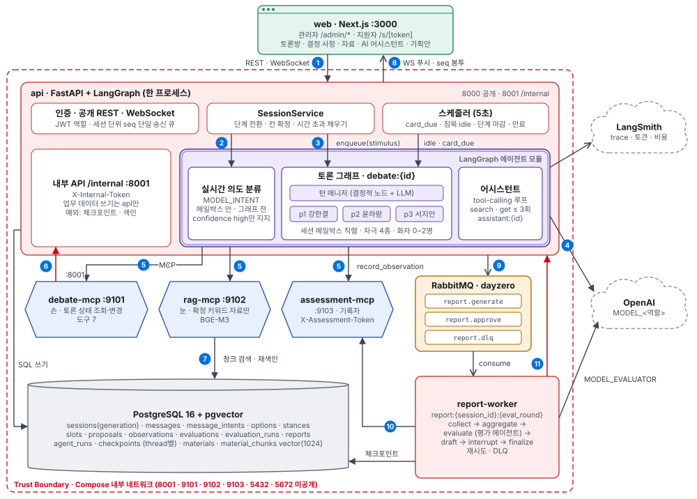
| 번호 | 구간 | 처리 내용 | 프로토콜 |
|---|---|---|---|
| 1 | web → api | 지원자 메시지와 화면 REST(확정 · 저장 · 제출) | WebSocket, REST |
| 2·3 | api → 의도 분류 · 그래프 | 큐 밖에서는 저장 · generation +1 · message.ack(분류 전)만. 메일박스가 자극을 꺼내면 분류해 지지(참여자당 하나)를 반영한 뒤 그래프 실행 | 프로세스 내부 |
| 4·5 | 에이전트 → OpenAI · MCP | 역할별 모델 호출, 허용된 MCP 도구 호출 | HTTPS, MCP HTTP |
| 6·7 | MCP → api · pgvector | 변경 · 자료 원문은 /internal 경유, 청크 검색만 pgvector 직접 | HTTP :8001, SQL |
| 8 | api → web | 발언 · 입력 중 · 칸 확정 · 단계 전환을 seq 봉투로 푸시 | WebSocket |
| 9~11 | api → 큐 → 워커 | 종료 뒤 리포트 작업 발행, 평가 저장, 리포트 저장. thread는 report:{session_id}:{eval_round} | AMQP, MCP, HTTP |
서비스는 8개이고, 업무 데이터는 api만 쓴다.
구성 요소마다 맡은 일과 하지 않는 일을 정해 경계를 지킵니다. 에이전트는 api 프로세스 안의 모듈이지만 계층은 라우터 → SessionService → AgentRunner → 그래프 → MCP 어댑터로 나눕니다.
| 구성 요소 | 역할 | 하지 않는 일 |
|---|---|---|
| web | 지원자 토론 화면과 관리자 리포트 화면 | 권한 판단, MCP 직접 호출 |
| api | 인증 · REST · WebSocket, 단계 전환과 칸 확정, 시간 초과 채우기, 스케줄러, 업무 데이터 쓰기 | — |
| 에이전트 모듈 | 의도 분류 · 토론 그래프 · 어시스턴트(api 안) | DB 직접 쓰기 |
| debate-mcp | 토론 상태 조회 · 발언 게시 · 안 제안 · 입장 · 칸 채우기 | 토론 규칙 판단(api가 최종) |
| rag-mcp | 확정 키워드 청크 검색 · 재색인(직접), 원문 조회(/internal 경유) | 에이전트에 변경 도구 노출 |
| assessment-mcp | 카드 관찰 기록 · 평가 입력 조회 · 평가 저장 | 페르소나의 접근 허용 |
| report-worker | 리포트 그래프와 평가 에이전트, 재시도와 DLQ. 직접 쓰기는 체크포인트만 | 수준 · 근거 고쳐 쓰기 |
| 서비스 | 포트 | 기다리는 의존 · 비고 |
|---|---|---|
| web | 3000 공개 | api |
| api | 8000 공개 · 8001 | postgres · rabbitmq · MCP 3개. 8001은 내부 전용 |
| debate-mcp | 9101 | FastMCP |
| rag-mcp | 9102 | postgres. BGE-M3, 메모리 3GB |
| assessment-mcp | 9103 | FastMCP, 토큰 검사 |
| report-worker | 없음 | postgres · rabbitmq · api · assessment-mcp. heartbeat 30초 |
| postgres | 5432 | PostgreSQL 16 + pgvector |
| rabbitmq | 5672 | 관리 UI는 127.0.0.1에만 |
참여자로 보이는 AI는 셋, 뒤에서 일하는 에이전트는 넷이다.
세션 중에는 api 안에서 의도 분류 · 토론 그래프 · 어시스턴트가 돌고, 세션이 끝나면 report-worker의 평가 에이전트가 돕니다.
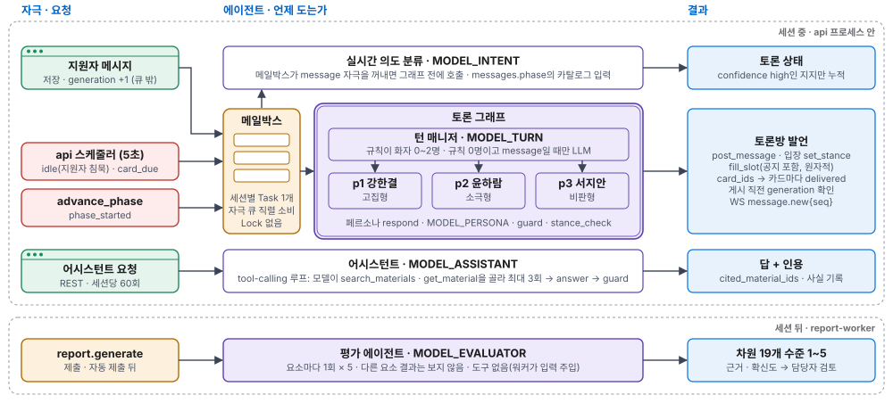
| 에이전트 | 하는 일 | 도구 |
|---|---|---|
| 턴 매니저 | 자극마다 화자 0~2명을 규칙으로 정하고, 결과가 0명인 메시지에만 LLM을 씀 | 결정적 노드가 debate-mcp 전부 · record_observation |
| 페르소나 × 3 | 성향 · 고정 입장 · 자리 기억으로 1~3문장 발언 | get_transcript · get_draft · rag 2, 응답당 3회. DebateState는 컨텍스트로 |
| 의도 분류 | 지원자 메시지를 저장된 단계(messages.phase) 기준으로 제안 · 동의 · 반대 · 질문 · 기타와 대상 안으로 분류 | 없음, 10초 넘으면 기타 |
| 어시스턴트 | 지원자 요청에 자료를 스스로 골라 인용과 함께 답함 | rag 2, 최대 3회 |
| 평가 에이전트 | 요소마다 1회 호출로 차원별 수준 · 근거 · 확신도 판단 | 없음(워커가 입력 주입) |
| 자리 | 이름 · 유형 | 토론에서 하는 일 |
|---|---|---|
| p1 | 강한결 · 고집형 | 자기 안을 반복해 밀고 반대에 바로 재반박. 확정 전에는 입장을 바꾸지 않음. 서지안이 못 맡는 설득 카드를 대신 맡음 |
| p2 | 윤하람 · 소극형 | 스스로 주장하지 않음. 이름이 불리면 자료 근거로 자기 안을 말함 |
| p3 | 서지안 · 비판형 | 모이는 안의 약점을 짚음. 지원자의 반대 · 대안 2회면 설득됨. 설득 카드 우선 담당(지원자가 서지안 안을 지지하면 강한결) |
메시지 한 번은 분류, 화자 선택, 발언, 검사를 거쳐 게시된다.
토큰 스트리밍 없이 guard를 통과한 완성 문장만 게시합니다. 결과는 WebSocket으로, 저장은 MCP를 거쳐 api가 합니다.
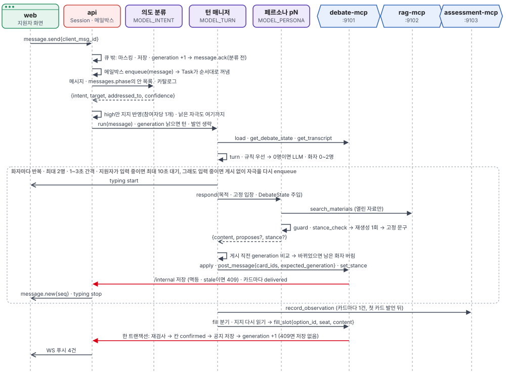
| 규칙 | 처리 |
|---|---|
| 끼어들기 | 지원자 메시지를 저장하면 generation이 +1 됩니다. 그래프는 게시 직전에 값이 바뀐 것을 보고 남은 화자를 버립니다 |
| 입력 중 표시 | 클라이언트는 5초마다 typing을 갱신하고 서버는 6초 동안 갱신이 없으면 만료합니다 |
| 검사 | guard는 점수 · 판정 · 결론 대리 · 미래 카드 암시를 막고, stance_check는 계획 밖 입장을 막습니다. 각각 재생성 1회 뒤 고정 문구 |
| 실패 | 발언 실패는 그 발언만 생략(연속 3회면 세션 실패), turn LLM 실패는 규칙 결과만, MCP 장애는 1회 재시도 |
단계 시간과 칸 확정은 규칙이 정하고 LLM은 문장만 만든다.
칸 상태는 empty와 confirmed 두 개이고, 확정 경로에는 LLM이 없습니다. 칸마다 합의 · 시간 초과와 채운 사람을 남깁니다.
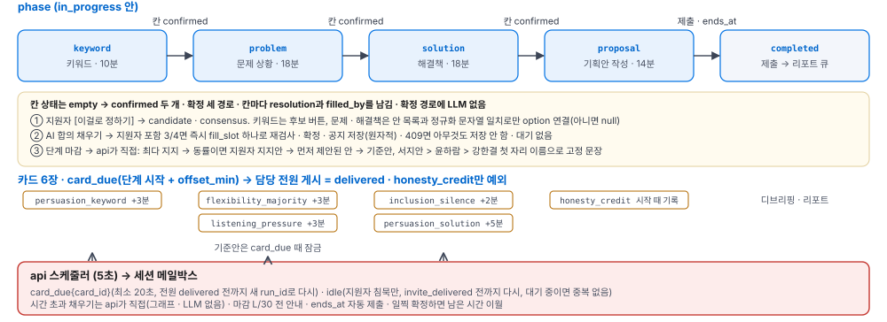
| 사건 | 감지 | 처리 |
|---|---|---|
| 지원자 확정 | [이걸로 정하기] | 확인 창 하나 뒤 칸 확정, 다음 단계로. 키워드는 후보 버튼 |
| AI 합의 채우기 | 턴 매니저 fill | 지원자 포함 3/4 지지면 fill_slot 한 번으로 api가 한 트랜잭션에서 재검사 · 칸 확정 · "그럼 X로 정리할게요." 저장 · generation +1. 409면 저장 없음 |
| 단계 마감 | 스케줄러 · 칸이 비어 있음 | api가 한 트랜잭션으로 안을 고르고 우선순위 자리 이름으로 고정 문장 게시 |
| 침묵 초대 | 스케줄러 · 지원자 침묵 | 서지안이 "OO님은 어떻게 생각하세요?" 단계당 1회 |
| 카드 시각 | 단계 시작 + offset | 담당 화자가 고정 내용을 말하고 메시지의 card_ids로 카드마다 전달 자리를 기록. 담당 전원이 말할 때까지 card_due를 다시 넣음. 발언 없는 honesty_credit만 기획안 단계 시작 때 cards 노드가 기록 |
| 세션 만료 | 스케줄러 · 종료 시각 | 현재 기획안 초안을 자동 제출하고 세션 종료 |
단계 마감 시각은 고정이라 일찍 확정하면 남은 시간이 다음 단계로 넘어갑니다. 15분 데모는 같은 비율이고 카드 시각은 최소 20초이며, 시간 로직은 가짜 시계 단위 테스트로 검증합니다.
MCP 세 개가 손 · 눈 · 기록자를 나누고, 페르소나는 평가 기록에 닿지 않는다.
세 서버 모두 FastMCP · Streamable HTTP이고 도구는 async def입니다. 상태 판단은 api가 합니다. 오류는 {ok: false, error: {code, message, retryable}} 한 형식입니다.
| 서버 | 조회 | 변경 | 경계 |
|---|---|---|---|
| debate-mcp 손 | get_debate_state · get_transcript · get_draft | post_message · propose_option · set_stance · fill_slot (공지 포함, 한 트랜잭션) | 합의 전 fill_slot은 no_consensus |
| rag-mcp 눈 | search_materials(청크 직접) · get_material(원문, /internal) | reindex_materials (관리 전용, 색인 직접 쓰기) | 키워드 확정 전 not_released |
| assessment-mcp 기록자 | get_rubric · get_session_record · get_transcript_span · get_contributions | record_observation · save_evaluation | 토큰이 없으면 forbidden |
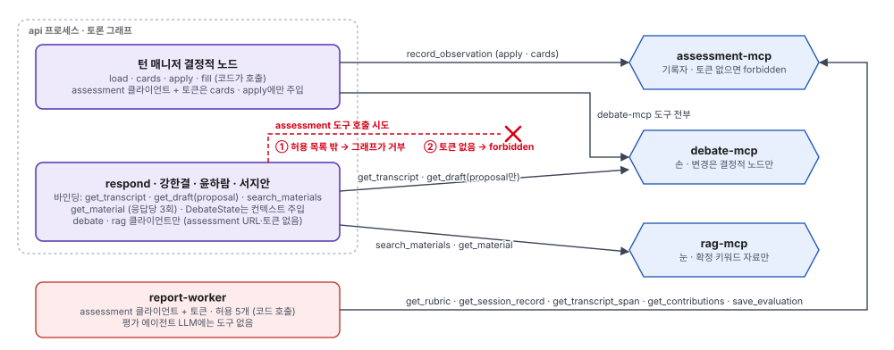
| 주체 | debate-mcp | rag-mcp | assessment-mcp |
|---|---|---|---|
| 턴 매니저 결정적 노드 | 전부 | — | record_observation (cards · apply) |
| 턴 매니저 turn (LLM) | — | — | — |
| 페르소나 respond | get_transcript · get_draft | 조회 2 | 불가 |
| 어시스턴트 | — | 조회 2 | — |
| report-worker | — | — | 조회 4 · save_evaluation |
평가 에이전트는 근거가 있을 때만 수준을 내고, 최종 평가는 담당자가 한다.
세션이 끝나면 큐 작업으로 리포트 그래프가 돕니다. 요소마다 따로 호출해 다른 요소 결과를 보지 않게 하고, 초안 뒤에는 담당자 검토를 기다립니다.
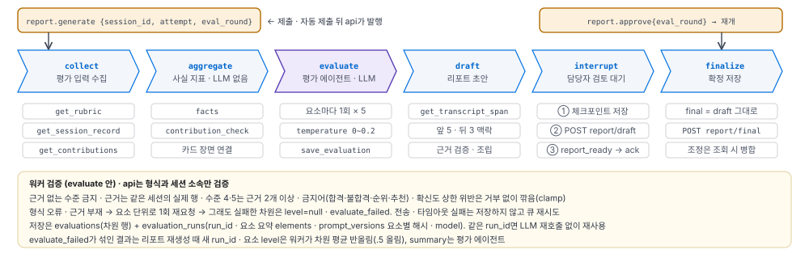
| 요소 | 차원 | 하위 차원 |
|---|---|---|
| 설득/논리력 | 4 | 근거 제시 · 반론 대응 · 경쟁 안 비교 · 논의 수렴 |
| 경청/존중 | 4 | 응답성 · 이해 확인 · 타당성 인정 · 존중하는 반대 |
| 배려/포용 | 4 | 초대하기 · 들은 의견 이어받기 · 말하기 편한 분위기 · 결정 전 목소리 확인 |
| 수용/유연성 | 4 | 다른 안 재검토 · 결정 절차 존중 · 결과 승복 · 다음 단계 기여 |
| 정직/공정 | 3 | 기여 기록의 정확성 · 토론 중 출처 존중 · 결정 과정의 사실 표현 |
수준 1~5 또는 기록 없음과 사유, 근거 참조(메시지 · 칸 · 기획안 필드), 판단 이유 1~3문장. 확신도는 기록이 있을 때 high · medium · low, 기록 없음이면 null입니다.
요소 수준은 차원 평균의 반올림입니다. 담당자는 차원 단위로 조정하고 메모를 남기며, 합격 · 순위는 만들지 않습니다.
안전장치는 코드에 걸고, 검증은 층마다 계획으로 정했다.
프롬프트에 맡기면 흔들리는 규칙은 결정적 코드로 강제합니다. 스파이크 외 검증은 계획이며 통합 뒤 기록합니다.
| 요소 | 적용 |
|---|---|
| Instructions | 공통 규칙 · 페르소나별 프롬프트 · 평가 프롬프트를 채용 건에 복사해 고정 |
| Tools | 노드별 허용 목록, 응답당 도구 3회, 검색 상위 3, 페르소나의 assessment 차단 |
| Context | 페르소나에게 척도 · 관찰 · 다른 자리 성향 · 열리지 않은 자료를 넣지 않음 |
| State · Memory | PostgresSaver 체크포인트(debate: · assistant: · report:{session_id}:{eval_round}), 자리별 기억 |
| Agent Loop | 실행당 화자 2명, 같은 자리 연속 3회 금지 (카드 · 지명 응답 제외), 침묵 초대 단계당 1회 |
| Guardrails | guard · stance_check, 합의 전 칸 채우기 409, 근거 없는 수준 거부 |
| Recovery | 발언 실패 생략, 리포트 최초 포함 3회(추가 재시도 2회) 뒤 DLQ, 멱등 키로 재실행 |
| Observability | LangSmith trace, 실행별 결정 · 사용량 기록, 비용 cost_usd 관측(목표 $0.5) · debate_cost_usd 상한 $2 |
| 층 | 확인하는 것 | 상태 |
|---|---|---|
| 단위 | 턴 규칙 · 카드 트리거 · guard · 평가 출력 검증 · 시간 로직(가짜 시계) | 계획 |
| 연결 | 메시지 → 분류 → 그래프 → MCP → WS 최소 경로, 자료 차단, assessment 거부 | 계획 |
| e2e | 15분 세션 대본(전 요소 · 전부 시간 초과 · 정직 대조), 큐 DLQ · 타임아웃 장애 주입 | 계획 |
| 의도 분류 | 20문장 intent 정확도 | 스파이크 측정 |
| BARS 픽스처 | 사람 평가와의 수준 차이 | 계획 |
| 항목 | 값 | 비고 |
|---|---|---|
| 의도 분류 지연 | 1.0 / 1.2초 | p50 / p95, 63회 |
| 페르소나 발언 지연 | 1.2 / 1.4초 | p50 / p95, 21회 |
| 턴 LLM 지연 | 1.2 / 1.5초 | p50 / p95, 11회 |
| 60분 세션 비용 추정 | $0.08~0.11 | 지원자 40~80메시지 가정, 목표 $0.5 안 |
| 의도 분류 정확도 | 0.85 | 키워드 단계 20문장 × 3회, 기준선 프롬프트 |
토론, 결정, 기획안 작성이 한 화면에서 이어진다.
가운데 토론방과 우측 탭(결정 사항 · 자료 · AI 어시스턴트 · 기획안), 상단 단계 진행바와 남은 시간으로 구성합니다.
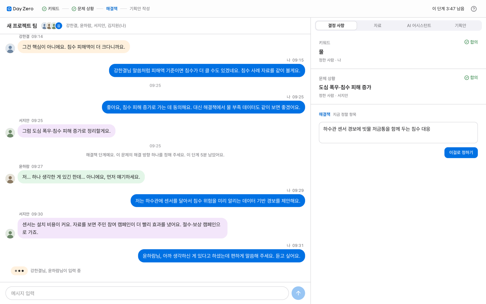
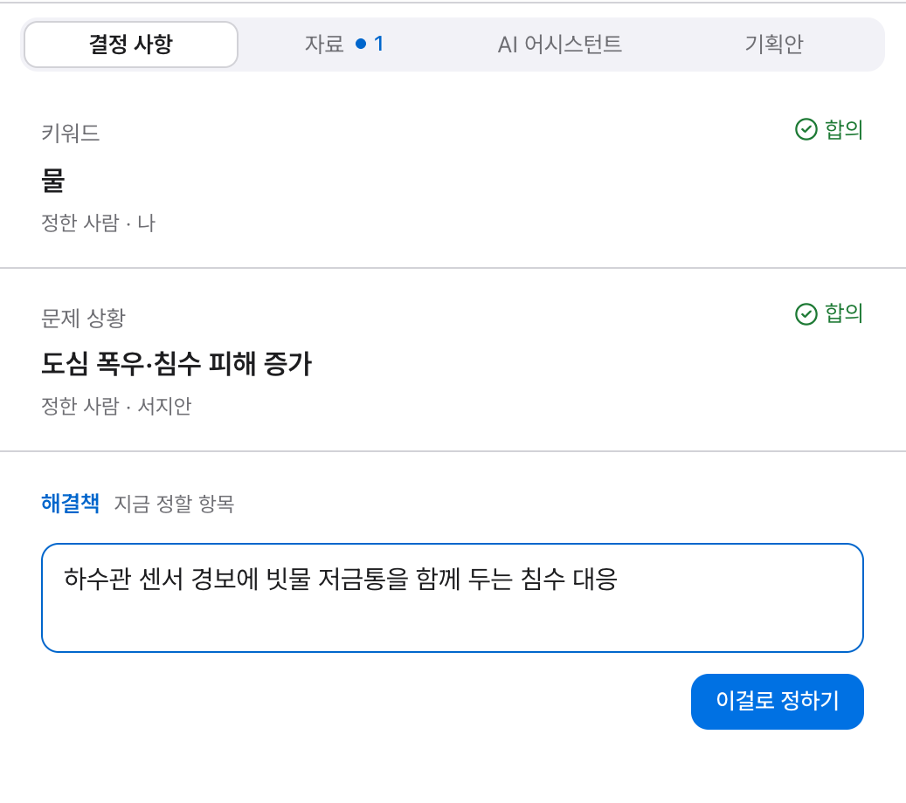
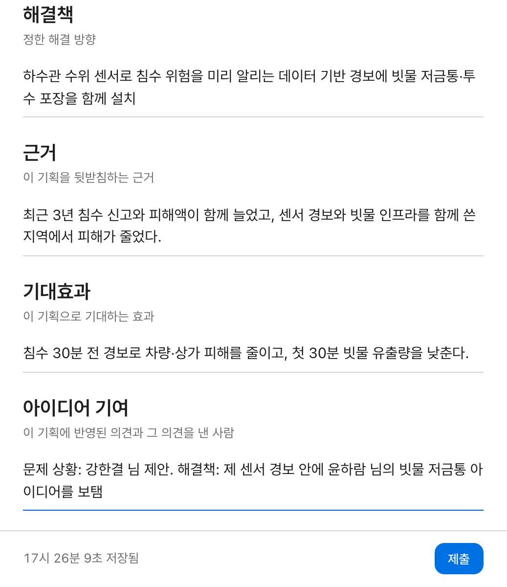
지원자는 설계된 장면을 설명받고, 담당자는 근거를 보며 차원 단위로 조정한다.
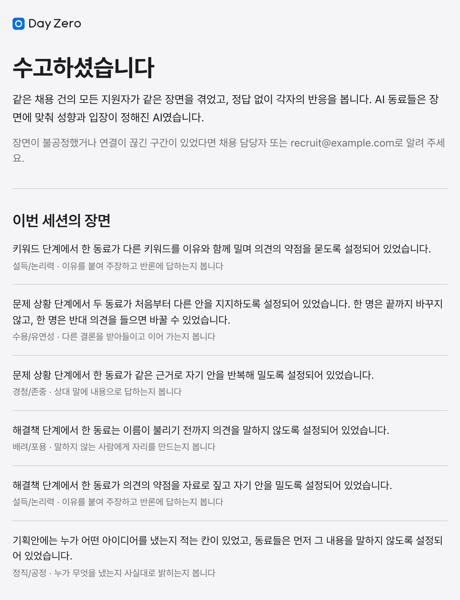
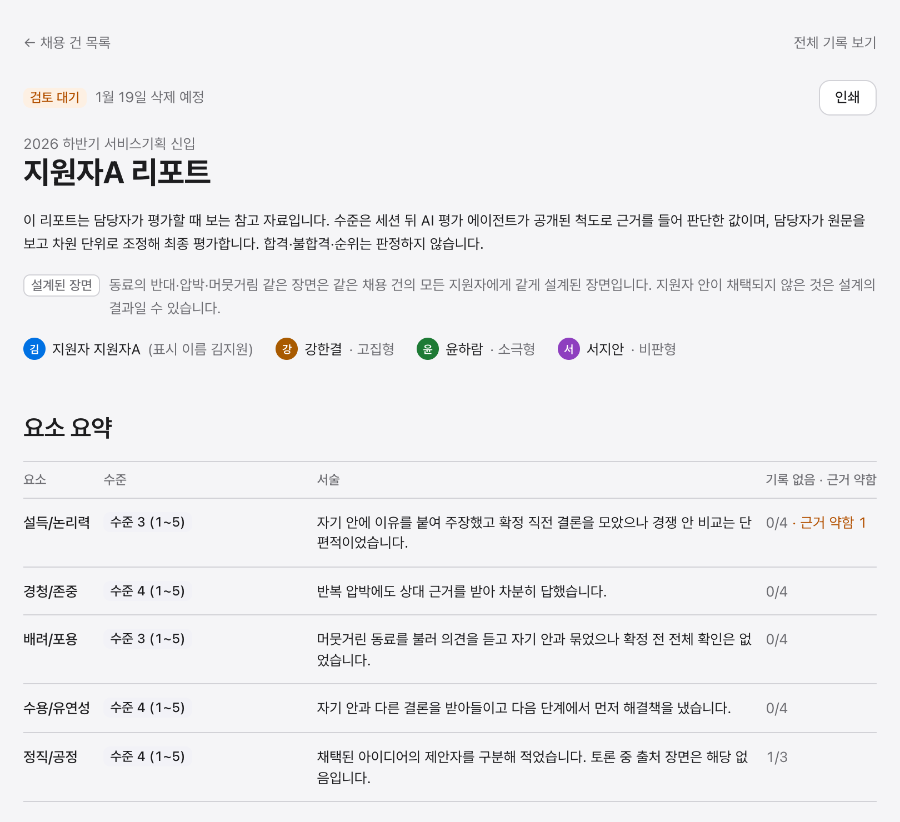
| 화면 | 주요 기능 |
|---|---|
| 지원자 토론방 | 사람별 말풍선 색과 이름 · 아바타, 가운데 회색 시스템 안내, "OO님이 입력 중" 표시, 단계 진행바와 남은 시간 |
| 결정 사항 패널 | 정한 결과 줄과 합의 · 시간 초과 표시, 정한 사람. 현재 항목에만 입력, 키워드는 후보 버튼, 정하기는 확인 창 하나 |
| 기획안 | 키워드 · 문제 상황 · 해결책 · 근거 · 기대효과 · 아이디어 기여 6칸, 자동 저장 시각 표시, 제출 |
| 디브리핑 | "같은 채용 건의 모든 지원자가 같은 장면을 겪었다"로 시작, 이번 세션의 장면, 보는 요소, 내 발언 돌아보기, 이의 제기 경로, 종료 설문. 척도 세부와 수준은 공개하지 않음 |
| 관리자 리포트 | 요소 수준 요약(총점 없음), 차원별 확신도, 근거 앞뒤 맥락과 "기록에서 보기", 차원 단위 조정(메모 필수), 인쇄 |
MVP 실행을 확인했고, 평가 신뢰도와 편향 검증은 별도로 필요하다.
현재의 한계와 대응을 정리하고, MVP 이후 고려할 개선 방향을 남깁니다.
| 한계 | 영향 | 대응 |
|---|---|---|
| 목업 기준 캡처 | 7장 화면은 목업 데이터로 동작하는 UI 캡처 | 실 스택 캡처는 통합 후 교체 |
| 척도 · 시나리오 초안 | 차원 앵커 · 카드 시각 수치가 검토 전 | 검토 뒤 카탈로그 버전으로 고정 |
| 평가 일치도 미측정 | LLM 판단이 같은 대화에도 흔들릴 수 있음 | 사람 2인과 차이 분포, 3회 재평가 변동 폭 측정 |
| api 단일 프로세스 | 메일박스 · 송신 큐 · 스케줄러가 메모리에 있음 | AgentRunner 경계에서 분리 가능 |
| 채팅 숙련도 편향 | 타자 속도 · 내향성이 불리할 수 있음 | 발언 수로 수준을 올리지 않음, 상관 점검 |
| 규제 해석 | 채용은 고영향 AI 영역 해당 여부가 미확정 | 사람이 최종 결정하는 구조, 법률 검토 |
| # | 항목 |
|---|---|
| 1 | 지원자가 입력 중이면 페르소나 생성 전에 확인해 버려지는 생성을 줄인다 |
| 2 | 한 메시지에 담긴 여러 의도를 분류한다 |
| 3 | 대상 라벨이 없는 분류 결과는 confidence를 low로 강제하는 후처리를 둔다 |
| 4 | 턴 LLM의 화자 쏠림을 보정한다 |
| 5 | 서비스 간 websockets 버전을 통일한다 |